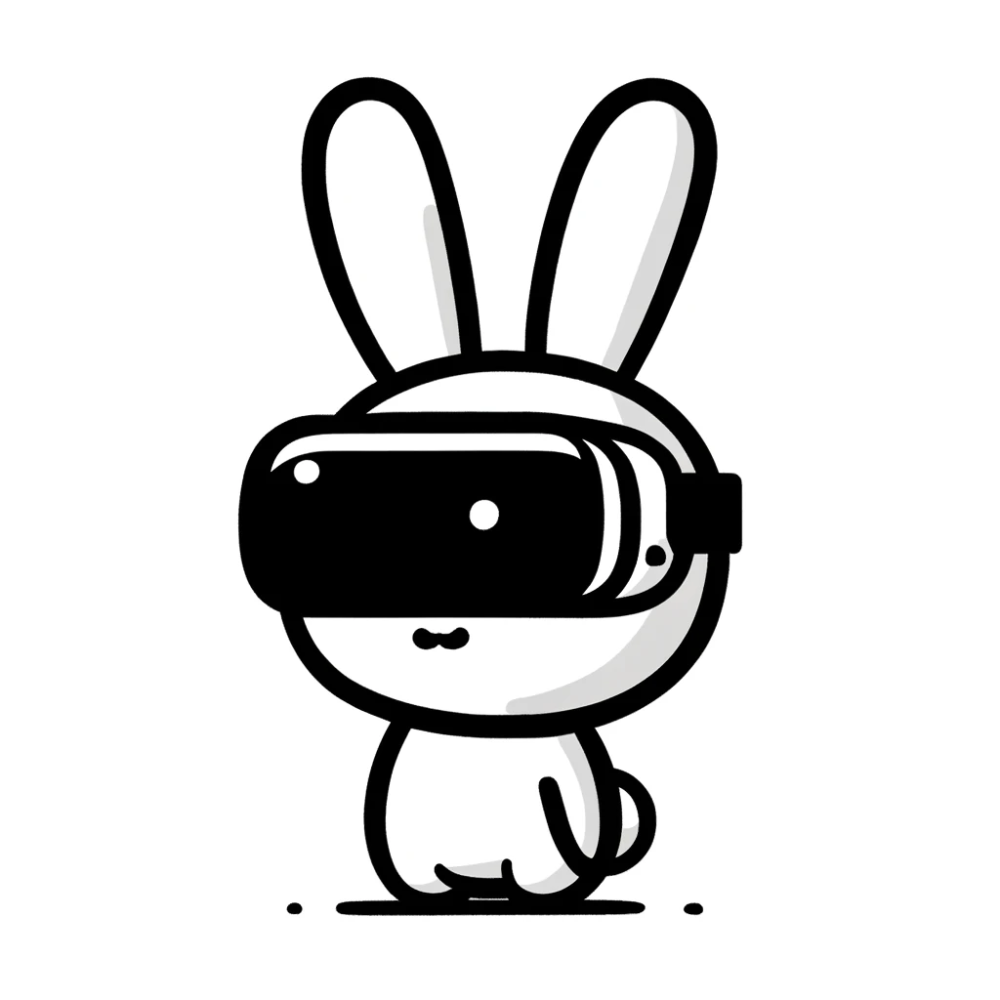

 Bunny-VisionPro
Real-Time Bimanual Dexterous Teleoperation for Imitation Learning
Anonymous authors
Robot Arm Motion: Bunny-VisionPro vs AnyTeleop+
Collision Avoidance: Ablation Study
Comparing Wearable Devices for Hand Pose Tracking and Robot Retargeting
Haptic Feedback Tasks
Multi-finger Dexterity Tasks
Latency: Slow Motion Video